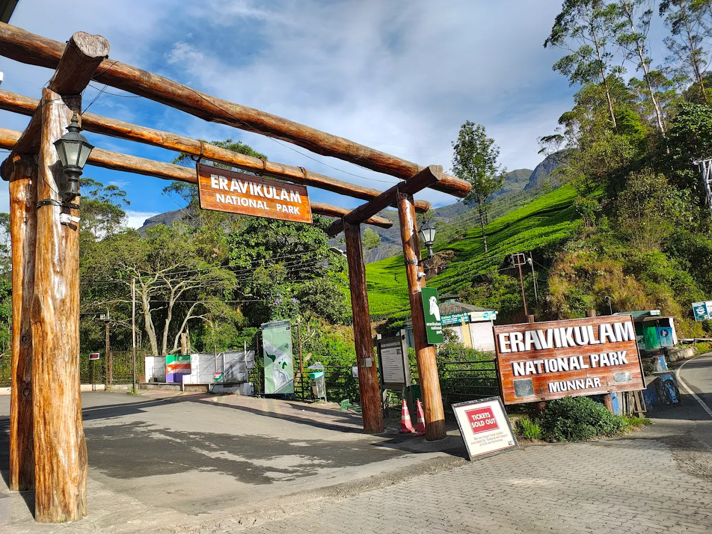
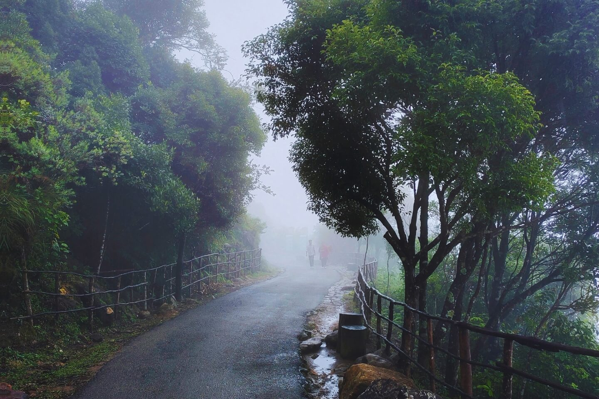
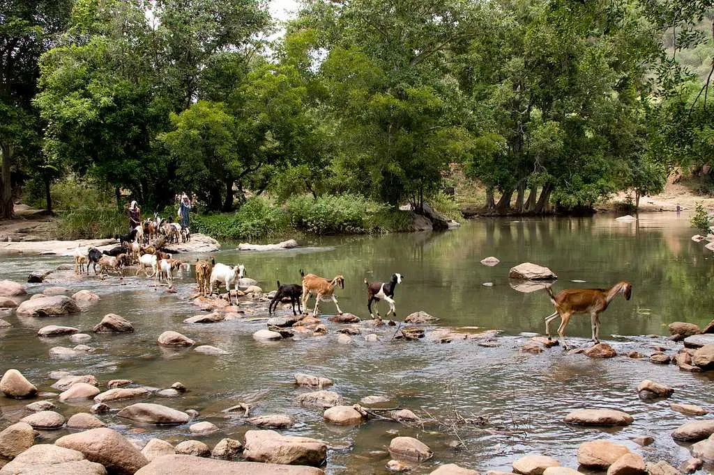
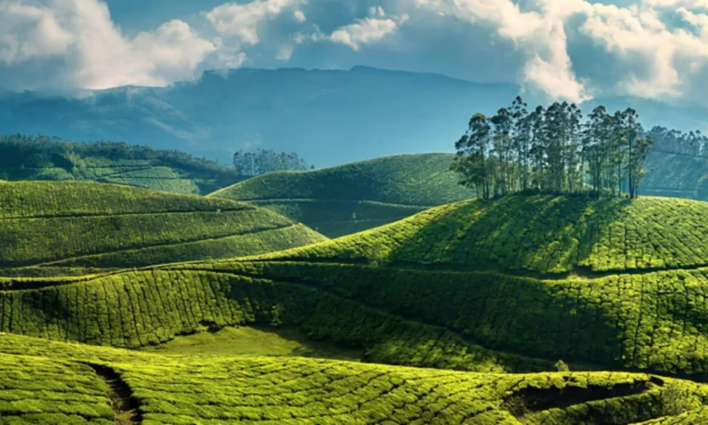
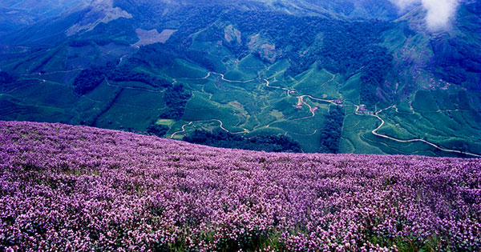
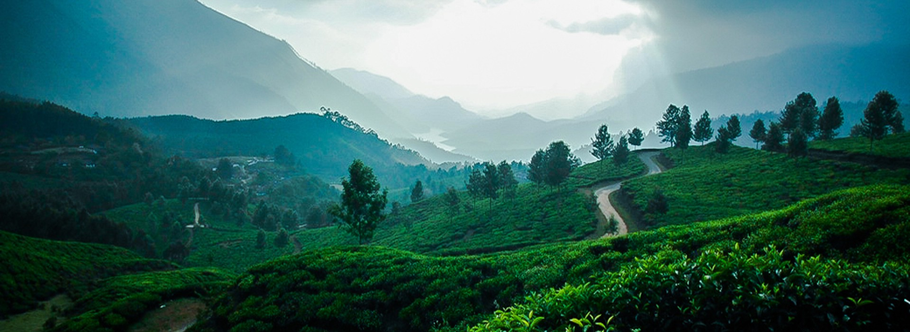

Munnar, a premier hill station in Kerala, is famous for its vast tea plantations, misty hills, and, waterfalls. Key attractions include Eravikulam National Park, Mattupetty Dam,
and the high-altitude Kolukkumalai Tea Estate. Visitors also enjoy Top Station views, trekking in Lakshmi Hills, and visiting the Tea Museum.Munnar is a town in the
Ghats mountain range in India’s Kerala state. A hill station and former resort for the British Raj elite, it's surrounded by rolling hills dotted with tea plantations established in the late
19th century.Eravikulam National Park, a habitat for the endangered mountain goat Nilgiri tahr, is home to the Lakkam Waterfalls, hiking trails and 2,695m-tall Anamudi Peak.
Eravikulam National Park in Munnar, Kerala - WinternoteEravikulam National Park is famous for protecting the endangered Nilgiri Tahr,a mountain goat, and for the rare Neelakurinji flowers
that bloom once every 12 years, turning hills blue.It also hosts South India's highest peak, Anamudi Peak, and offers rich biodiversity with diverse flora, fauna, and stunning
views of the Western Ghats.Exploring Eravikulam National Park typically takes around 2 to 3 hours, covering the bus ride in and the walk to the viewpoint to see Nilgiri Tahr
and landscapes, though you should budget extra time for potential queues, especially during peak season. The journey involves a scenic bus ride into
the park and then a walk or battery-car ride up to the summit area where you can trek further


The sanctuary is renowned for its diverse wildlife, including several rare and endangered species. The sanctuary is home to the endangered Grizzled Giant Squirrel, Indian Elephant, Tiger,
Leopard, Gaur, Sambar Deer, Spotted Deer, and Nilgiri Tahr.Chinnar Wildlife Sanctuary is a wildlife sanctuary in the Idukki district of India's Kerala state. It is one of 18 wildlife
sanctuaries among the protected areas of Kerala.


Kurinjimala Sanctuary is located on the eastern part of Southern Western Ghats of Kerala.The sanctuary is near Vattavada, about 42 Kms from Munnar town.
Government of Kerala declared Kurinjimala Sanctuary on 6th October 2006. The area has great ecological, faunal, floral, geographical and zoological significance.
Kurinjimala Sanctuary protects the approximately 32 hectare core habitat of the endangered Neelakurinji plant in the Kottakamboor
and Vattavada villages in Devikulam Taluk, in the Idukki district of Kerala, a state in southern India

